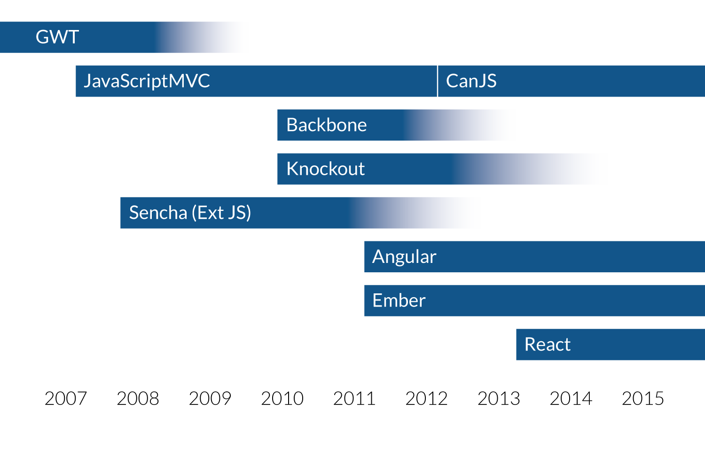
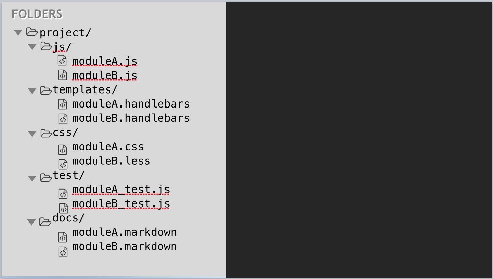
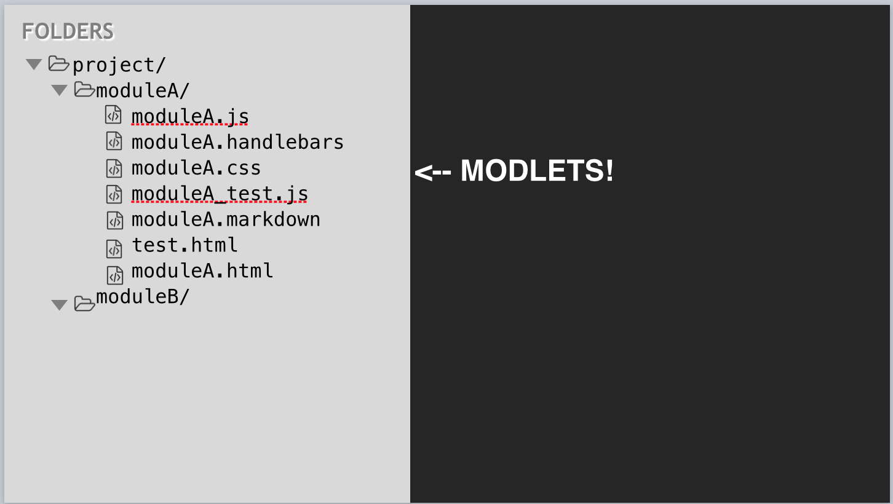
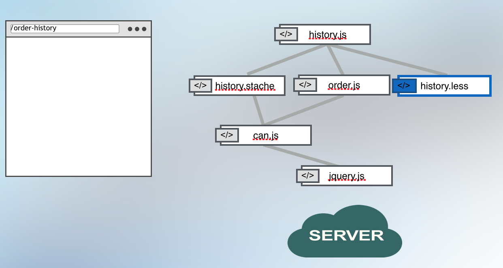
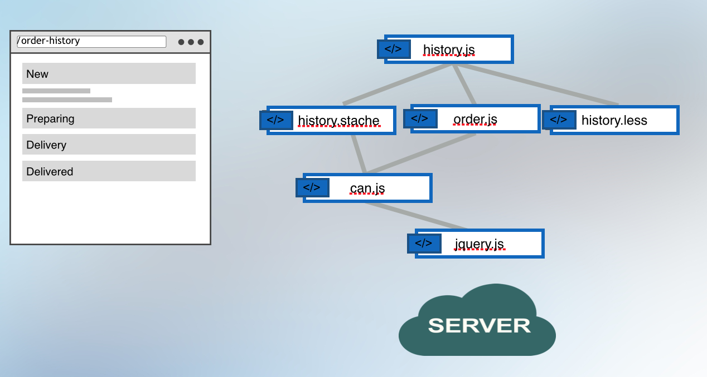
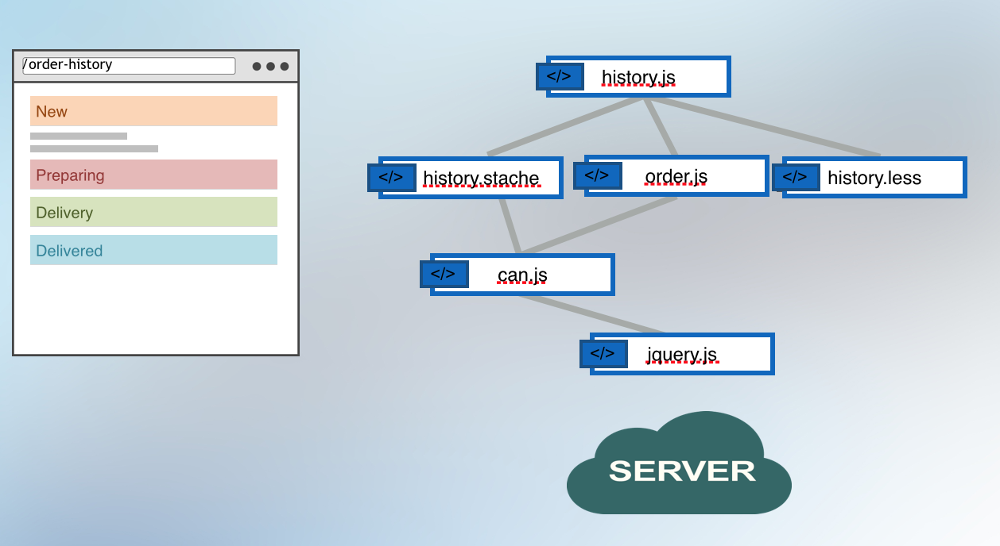
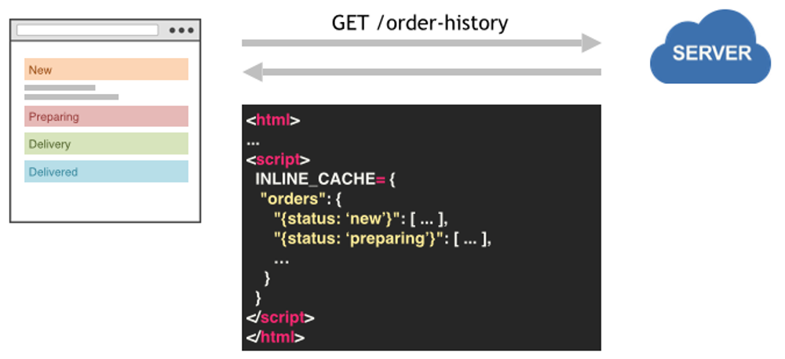
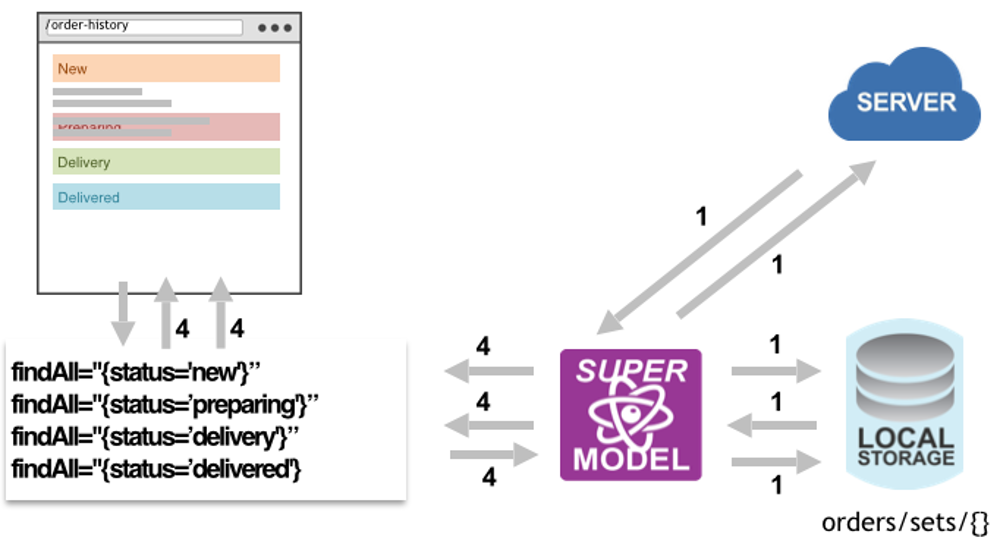

Create an application folder:
mkdir place-my-order
cd place-my-orderDoneJS uses a package.json for configuration and dependencies:
npm initAnd is installed via NPM:
npm install donejs --saveAlso install packages for place-my-order.com assets (CSS, Images) and API:
npm install place-my-order-assets place-my-order-api --savepmo/index.stache<html>
<head>
<title>Place My Order</title>
{{asset "css"}}
</head>
<body>
<can-import from="place-my-order-assets" />
<can-import from="pmo/app" [.]="{value}" />
<h1>{{message}}</h1>
{{asset "inline-cache"}}
{{#if isProduction}}
<script src="/node_modules/steal/steal.production.js"
main="pmo/index.stache!done-autorender"></script>
{{else}}
<script src="/node_modules/steal/steal.js"></script>
{{/if}}
</body>
</html>pmo/app.js// pmo/app.js
import AppMap from "can-ssr/app-map";
const AppState = AppMap.extend({
message: 'Hello World!'
});
export default AppState;In package.json add:
"main": "pmo/index.stache!done-autorender",
"scripts": {
"start": "can-serve --port 8080",
"test": "echo \"Error: no test specified\" && exit 1"
},
"system": {
"npmIgnore": ["documentjs", "place-my-order-api"]
}Getting rid of the loading indicator.
curl http://place-my-order.com/restaurants/cow-barn/order<html>
<head>
<link rel="stylesheet" href="/dist/bundles/pmo/index.css">
<link rel="stylesheet" href="/dist/bundles/pmo/order/new/new.css">
</head>
<body>
...
<script>
INLINE_CACHE = {"restaurant":{"{..."}}}
</script>
</body>
</html>lib/app.jsvar app = require("express")();
var url = require("url");
var render = require("can-ssr")({
config: __dirname + "/package.json!npm"
});
app.get("/"), function(req, res){
var pathname = url.parse(req.url).pathname;
render(pathname).then(function(html){
res.send(html);
});
});
app.listen(7000);export const ViewModel = Map.extend({
states: { get() { return State.findAll({}); } }, ...});
export default Component.extend({
tag: 'app-restaurant-list',
viewModel: ViewModel,
template,
events: {
inserted(){
let statesPromise = this.attr("states");
this.scope.attr("@root").pageData( statesPromise );
}
}
});| Technique | Maintainability | Speed |
|---|---|---|
| Duplicate Code | 0 | 10 |
| Headless Browser | 9 | 5 |
| Virtual DOM | 8 | 8 |
can-serve --proxy http://localhost:7070 --port 8080


<h1>Hello {{name}}</h1>import Map from "can/map/";
export default Map.extend({
name: ""
});import Component from "can/component/";
import ViewModel from "./hello-viewmodel";
import template from "./hello.stache!";
Component.extend({
tag: "hello-greeting",
viewModel: ViewModel,
template
});<hello-greeting name="world">
<h1>Hello world!</h1>
</hello-greeting>A StealJS plugin that allows composing CanJS Components in a single file:
<can-component tag="hello-greeting">
<template>
<h1>Hello {{name}}!</h1>
</template>
<view-model>
import Map from "can/map/";
export default Map.extend({
name: ""
});
</view-model>
</can-component>import { ViewModel, template } from "hello-world.component!";
const vm = new ViewModel();
console.log(template(vm));pmo/home.component<can-component tag="pmo-home">
<template>
<div class="homepage">
<img src="node_modules/place-my-order-assets/images/homepage-hero.jpg"
width="250" height="380" />
<h1>Ordering food has never been easier</h1>
<p>
We make it easier than ever to order gourmet food
from your favorite local restaurants.
</p>
<p><a class="btn" href="/restaurants" role="button">
Choose a Restaurant
</a></p>
</div>
</template>
</can-component>


Update pmo/app.js to:
// pmo/app.js
import AppMap from "can-ssr/app-map";
import route from 'can/route/';
const AppState = AppMap.extend({});
export default AppState;
route(':page', { page: 'home' });
route(':page/:slug', { slug: null });
route(':page/:slug/:action', { slug: null, action: null });
export default AppState;route.deparam('/home')
// -> { page: 'home' }
route.deparam('/restaurants/cheese-city/order')
// -> { page: 'restaurants', slug: 'cheese-city', action: 'order' }
state.attr({ page: 'order-history' })
// -> /order-history
state.attr({ page: 'restaurants', slug: 'cheese-city' })
// -> /restaurants/cheese-city
route.attr({
page: 'restaurants',
state: 'IL',
city: 'Chicago'
})
// -> /restaurants?state=IL&city=Chicago{{#eq page "home"}}
<pmo-home></pmo-home>
{{/eq}}
{{#eq page "restaurants"}}
<can-import from="pmo/restaurant/list/" can-tag="pmo-loading">
<pmo-restaurant-list></pmo-restaurant-list>
</can-import>
{{/eq}}route(':page/:slug', { slug: null });
route(':page/:slug/:action', { slug: null, action: null });{{#eq page "home"}}
<pmo-home></pmo-home>
{{/eq}}
{{#eq page "restaurants"}}
{{#if slug}}
{{#eq action 'order'}}
<pmo-order-new slug="{slug}"></pmo-order-new>
{{/eq}}
{{^if action}}
<pmo-restaurant-details></pmo-restaurant-details>
{{/if}}
{{else}}
<pmo-restaurant-list></pmo-restaurant-list>
{{/if}}
{{/eq}}can-href<div class="restaurant">
<img src="/{{images.thumbnail}}" width="100" height="100">
<h3>{{name}}</h3>
<a class="btn" can-href="{ page='restaurants' slug=slug }">Details</a>
</div>href will be /restaurants/<restaurant-slug>.
Change the route
route(':page/restaurant/:slug');href will become /restaurants/restaurants/<restaurant-slug>.
Middleware for persisting data that can:
can.Model compatibility layer<can-import from="pmo/models/restaurant" />
<restaurant-model get-list="{ state=state city=city }">
{{#if isPending}}
<div class="loading"></div>
{{else}}
{{#if isResolved}}
<ul>
{{#each value}}
<li>{{name}}</li>
{{/each}}
</ul>
{{else}}
<div class="error">An error occurred</div>
{{/if}}
{{/if}}
</restaurant-model>

pmo/test.js:
import QUnit from 'steal-qunit';
QUnit.module('Basic tests');
QUnit.test('basics', function(){
ok(true, 'Test ran');
});pmo/test.html:
<title>pmo/test</title>
<script src="../node_modules/steal/steal.js" main="pmo/test"></script>
<div id="qunit-fixture"></div>Install a command line test runner:
npm install testee --save-devUpdate the npm test script:
"scripts": {
"test": "testee pmo/test.html --browsers firefox",Run the tests:
npm test<can-component tag="pmo-counter">
<template>
Button clicked <span class="count">{{count}}</span> times
<button class="btn" can-click="{increment}">Update count</button>
</template>
<view-model>
import Map from 'can/map/';
import 'can/map/define/';
export default Map.extend({
define: { count: { value: 0 } },
increment() {
this.attr('count', this.attr('count') + 1);
}
});
</view-model>
</can-component>import QUnit from 'steal-qunit';
import F from 'funcunit';
import Home from './counter.component!';
import stache from 'can/view/stache/';
import $ from 'jquery';
F.attach(QUnit);
const template = stache(`<pmo-counter></pmo-counter>`);
QUnit.module('pmo/counter');
QUnit.test('Increments count', function(){
$('#qunit-fixture').html(template({}));
F('pmo-counter .count').html('0', 'Count 0 intially');
F('pmo-counter button').click();
F('pmo-counter .count').html('1', 'Count incremented');
});var stealTools = require("steal-tools");
var stealCordova = require("steal-cordova")({
platforms: ["ios", "android"]
});
var buildPromise = stealTools.build({
config: __dirname + "/package.json!npm"
});
buildPromise.then(stealCordova.build);